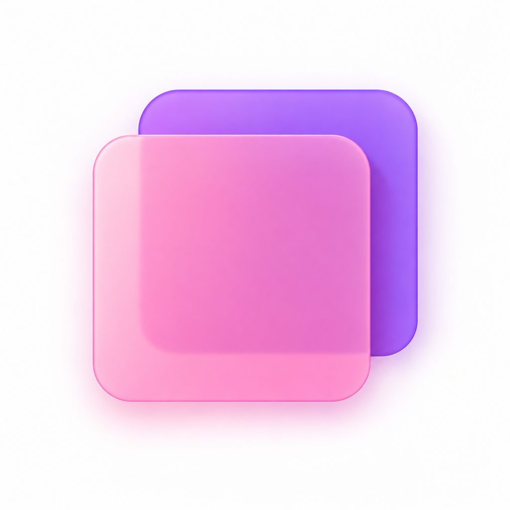

01
AI 拆解资料成卡组
上传 TXT、Markdown、PDF、Word 或 PPT，AI 自动生成“根卡组—子卡组—卡片”的层级结构，预览确认后入库，不覆盖你已有的内容。

序岛 Xudao01 REMEMBER, BY DESIGN
序岛把资料拆解成层级卡组，用知识树呈现你的掌握全貌，再由 FSRS 记忆算法安排每一次复习——只让即将忘记的卡片，在恰当的时刻出现。
记忆不该从反复翻书开始。
02 BUILT FOR MEMORY
上传 TXT、Markdown、PDF、Word 或 PPT，AI 自动生成“根卡组—子卡组—卡片”的层级结构，预览确认后入库，不覆盖你已有的内容。
每个节点汇总卡片总数、今日到期数与聚合掌握度。哪个分支薄弱、哪里该优先复习，一眼看清，而不是面对一堆零散题目。
基于 FSRS-4.5 记忆算法，按你的真实评分动态调整每张卡的难度、稳定性与下次间隔，把时间花在真正会忘的地方。
03 FROM MATERIAL TO MEMORY
课件、笔记、书本章节都可以。生成结果先预览，确认后才写入你的库。
层级卡组自动成为一棵树，卡片数量、到期数与掌握度实时汇总到每个节点。
每日计划按 FSRS 到期情况生成，四档评分反馈回记忆模型，越用越懂你。
MEMORY, IN ORDER.